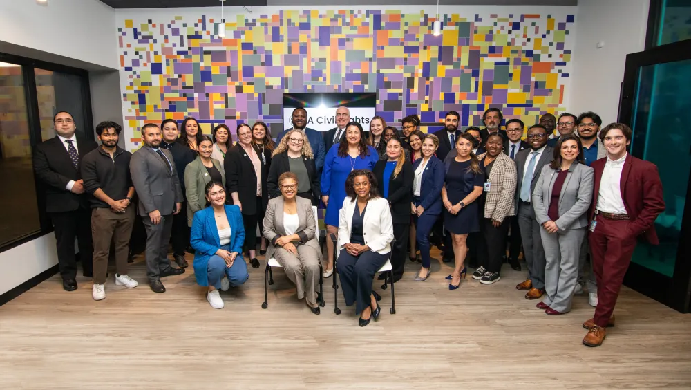

Experience
This section is still being updated!
Los Angeles Civil Rights Department
Policy Fellow
The Civil + Human Rights and Equity Department, or LA Civil Rights for short, is focused on reducing bias and injustice, and promoting equity in the City of Los Angeles. As a Policy Fellow, I mainly supported the Office of Racial Equity’s policy work through research, data analysis, and stakeholder engagement. Some of my contributions include:

Los Angeles City Controller
Innovation Aide
The Los Angeles City Controller is the elected paymaster, auditor, and chief accounting officer for the City of Los Angeles. As an Innovation Aide, I supported the office’s goal to provide transparency on City operations, policies, metrics, and data. This includes managing and analyzing data, creating public-facing dashboards and story maps, and writing reports with research and recommendations with equity gaps that persist. Some of my contributions include:

Los Angeles Mayor's Office of Eric Garcetti
Public Engagement Intern
Los Angeles Mayor Eric Garcetti’s Office of Public Engagement acted as a point of coordination for dialogue between the Mayor’s Office and the diverse constituents and communities of Los Angeles. As a Public Engagement Intern for the Central Area, I supported the Mayor’s vision to create an inclusive, transparent, accountable city government. My work consisted of developing outreach strategies to engage community stakeholders, drafting logistical paperwork for the Mayor, and coordinating the Mayor’s Youth Council.